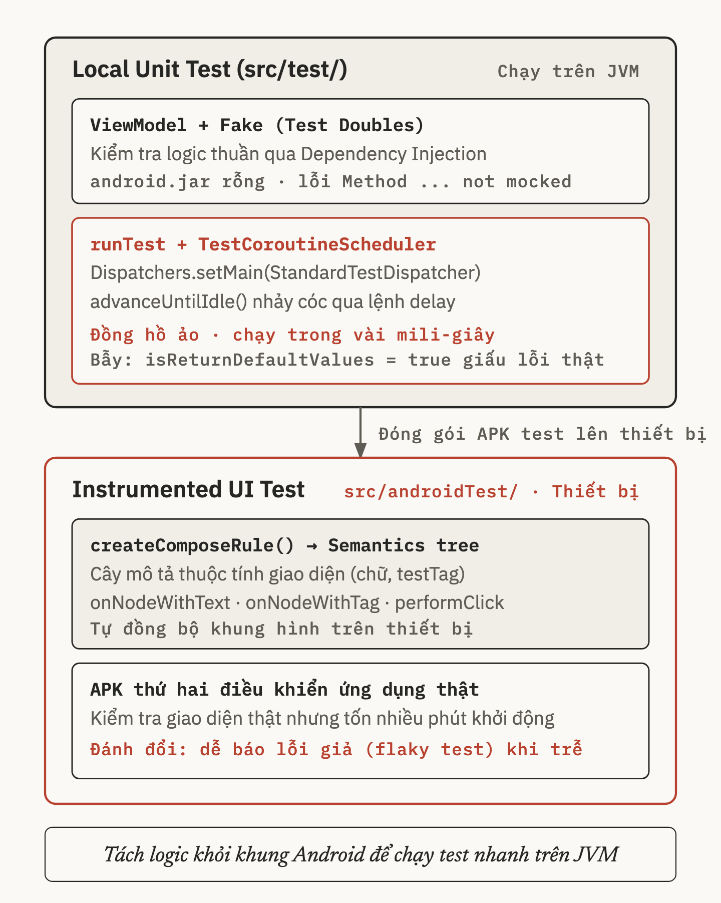

Unit test & UI test
Bản 30 giây
Mỗi lần sửa hàm tính tiền hay gọi mạng mà phải cài ứng dụng lên máy rồi bấm thử, bạn sẽ mất nhiều phút. Android tách kiểm thử thành hai nhánh: chạy logic thuần trong vài mili-giây trên máy tính, và chạy giao diện trên thiết bị. Nhờ vậy, bạn bắt được lỗi logic ngay lúc vừa gõ xong mà không cần mở màn hình ứng dụng.
Cần biết trước
Vấn đề buộc nó ra đời
Ở các bản Android đầu, mọi bài test đều phải đóng gói thành file cài đặt rồi đẩy lên thiết bị hoặc máy ảo. Mỗi lần sửa một dòng tính toán nhỏ, lập trình viên phải chờ biên dịch và khởi động máy mất hàng phút. Vì vòng lặp chờ quá lâu, nhiều đội bỏ hẳn việc chạy test tự động trước khi ghép code.
Khi Google đưa bộ kiểm thử cục bộ vào thư mục src/test/, code lại vấp phải tệp android.jar trên máy tính. Tệp này chỉ chứa vỏ hàm rỗng để biên dịch chứ không có mã chạy thật của hệ điều hành. Gọi bất kỳ hàm khung Android nào như Log.d trong test cục bộ cũng làm bài test sập với lỗi Method ... not mocked.
Để gỡ nút thắt đó, kiến trúc Android tách hẳn logic trong ViewModel khỏi khung hệ điều hành và dùng bản giả (Test Doubles). Riêng tác vụ bất đồng bộ được thư viện kotlinx-coroutines-test gom vào đồng hồ ảo của runTest để tua nhanh thời gian chờ.
Nó thực sự là cái gì
Kiểm thử trên Android không phải là một công cụ duy nhất chạy được mọi thứ ở cùng một nơi. Thực chất là hai môi trường tách biệt theo thư mục mã nguồn: src/test/ chạy trên máy ảo JVM của máy tính để kiểm logic. Còn src/androidTest/ đóng gói thành một APK thứ hai cài lên thiết bị để điều khiển ứng dụng thật.
Cơ chế

Khi chạy Local Unit Test trong src/test/, JVM nạp tệp android.jar rỗng nên bạn chỉ truyền bản giả (Fake) qua Dependency Injection. Với coroutine, hàm runTest tạo TestCoroutineScheduler xếp hàng các tác vụ từ StandardTestDispatcher và nhảy cóc qua lệnh delay bằng advanceUntilIdle(). Ngược lại, Instrumented UI Test trong src/androidTest/ đẩy APK test lên máy và dùng createComposeRule() dựng cây ngữ nghĩa (Semantics tree). Các hàm onNodeWithText, onNodeWithTag và performClick sẽ tìm nút trên cây mô tả thuộc tính giao diện đó và tự đồng bộ khung hình.
Đánh đổi
Chạy Local Unit Test trên JVM tốn vài mili-giây cho hàng trăm bài, nhưng không thấy được lỗi hiển thị hay khác biệt phần cứng. Ngược lại, Instrumented UI Test kiểm tra được giao diện thật trên thiết bị. Đổi lại, nó tốn nhiều phút khởi động máy ảo và dễ báo lỗi giả (flaky test) khi hoạt ảnh làm trễ khung hình.
Nguyên lý gốc
Đẩy phần lớn phép kiểm tra xuống tầng thấp nhất không phụ thuộc môi trường ngoài, để có phản hồi nhanh với chi phí rẻ.
Key insight
Bài unit test sập vì lỗi
Method ... not mockedkhông phải do thiếu thư viện giả lập, mà vì lớp logic dính vào khung Android.
Khuôn mẫu chuẩn
@Test
fun loadData_updatesUiState() = runTest {
Dispatchers.setMain(StandardTestDispatcher(testScheduler))
try {
val viewModel = UserViewModel(FakeUserRepository())
viewModel.loadData()
advanceUntilIdle()
assertEquals("Alice", viewModel.uiState.value)
} finally {
Dispatchers.resetMain()
}
}
Bẫy & ranh giới
Dùng thư viện tạo đối tượng giả (Mock) để ép từng lệnh nội bộ sẽ khóa chặt bài test. Nó làm bài test gãy ngay khi bạn đổi tên hàm riêng tư. Đừng bật cờ isReturnDefaultValues = true để né lỗi Method ... not mocked, vì hàm khung Android sẽ trả về null và giấu lỗi thật. Khi test viewModelScope trên JVM mà quên gọi Dispatchers.setMain, bài test sẽ sập ngay với lỗi Module with the Main dispatcher had failed to initialize.
Câu hỏi thực chiến
Hỏi: Có nên dùng thư viện Mock cho mọi lớp phụ thuộc khi viết Unit Test không?
Không. Lạm dụng Mock để kiểm tra xem hàm A có gọi hàm B hay không sẽ khóa cứng bài test vào cách viết bên trong. Bạn nên ưu tiên viết lớp Fake giữ sẵn dữ liệu trong bộ nhớ để kiểm tra trạng thái cuối cùng mà ViewModel phát ra.
Hỏi: Vì sao gọi viewModelScope.launch trong Local Unit Test lại sập dù đã bọc trong runTest?
Vì viewModelScope mặc định dùng Dispatchers.Main, vốn dựa vào Looper của luồng giao diện Android không tồn tại trên JVM máy tính. Bạn bắt buộc phải gọi Dispatchers.setMain để trỏ luồng chính về StandardTestDispatcher trước khi chạy, rồi gọi Dispatchers.resetMain() khi dọn dẹp.
Hỏi: Trong Compose UI Test, làm sao tìm và bấm một nút không có chữ mà chỉ có hình icon?
Bạn không tìm qua file ảnh được vì Compose Test chỉ đọc cây ngữ nghĩa Semantics tree. Hãy gắn mô tả contentDescription cho icon hoặc gắn thẻ Modifier.testTag vào nút đó, rồi dùng onNodeWithContentDescription hoặc onNodeWithTag để bấm.
Ý bắt buộc khi giải thích lại
- Phân biệt được môi trường chạy của
src/test/(JVM máy tính vớiandroid.jarrỗng) vàsrc/androidTest/(APK test cài trên thiết bị). - Giải thích được cách
runTest,StandardTestDispatchervàTestCoroutineSchedulertua nhanh thời gian ảo và thay thếDispatchers.Main. - Nêu được cách Compose UI Test duyệt cây ngữ nghĩa (
Semantics tree) quacreateComposeRule()và lý do ưu tiênFakehơnMock. - Viết lại được khuôn mẫu chuẩn từ trí nhớ.
Nguồn
- Fundamentals of testing Android apps — Android Developers
- Build local unit tests — Android Developers
- Testing Kotlin coroutines on Android — Android Developers
- Testing your Compose layout — Android Developers